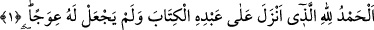
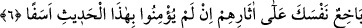

DOSDOĞRU BİR KİTAP
Rahmân ve Rahîm (olan) Allah’ın adıyla.
1. Hamd olsun Allah’a ki kulu (Muhammed’e), Kitab’ı indirdi ve ona hiçbir eğrilik
koymadı.
2. Onu dosdoğru (bir Kitab) olarak indirdi ki katından gelecek şiddetli azâba
karşı (insanları) uyarsın ve yararlı işler yapan müminlere kendileri için güzel
mükâfat bulunduğunu müjdelesin.
3. Onlar orada ebedî kalacaklardır.
4. Ve “Allah evlât edindi” diyenleri de uyarmak için.
5. Ne onların (Allah evlât edindi, diyenlerin), ne de atalarının bu konuda hiçbir
bilgisi yoktur. Ağızlarından çıkan bu söz ne büyük oldu! Yalandan başka bir şey
söylemiyorlar.
6. Bu yeni Kitab’a inanmazlarsa (ve bu yüzden helâk olurlarsa) arkalarından
üzüntüyle neredeyse kendini harap edeceksin.
“Hamd olsun Allah’a ki,” “el-Hamd” lafzının başındaki lâm, istihkak içindir. Yâni
Allah hamd, övgü ve şükrün tümüne lâyıktır. Çünkü kâinattaki her varlık O’nun sonsuz
nimetlerinden bir nimettir. O’ndan başka gerçek anlamda nimet veren yoktur.
Dâvud Kayserî (r.h.) şöyle demiştir: “Hamd sözle, davranışla ve hâl ile olmak üzere
üç kısımdır. Sözlü hamd, Cenâb-ı Hakk’ı dil ile övmek ve peygamberlerin lisanıyla
kendi nefsini nasıl övmüşse O’nu öylece senâ etmektir.
Fiilî hamd, Allah rızasını kazanmak ve O’nun yüce cenâbına yönelmek için bedenle
yapılan ibâdet ve hayırlardır. Çünkü insana dil ile hamd etmek gerektiği gibi her uzva
karşılık şükür olarak ve her hâlükarda hamd etmek gerekir. Nitekim Nebî (a.s.) şöyle
buyurmuştur: “Her hâlükarda Allah’a hamd ederim.”[156] Bu ise ancak nefsin hazlarını